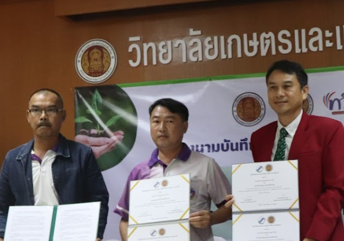
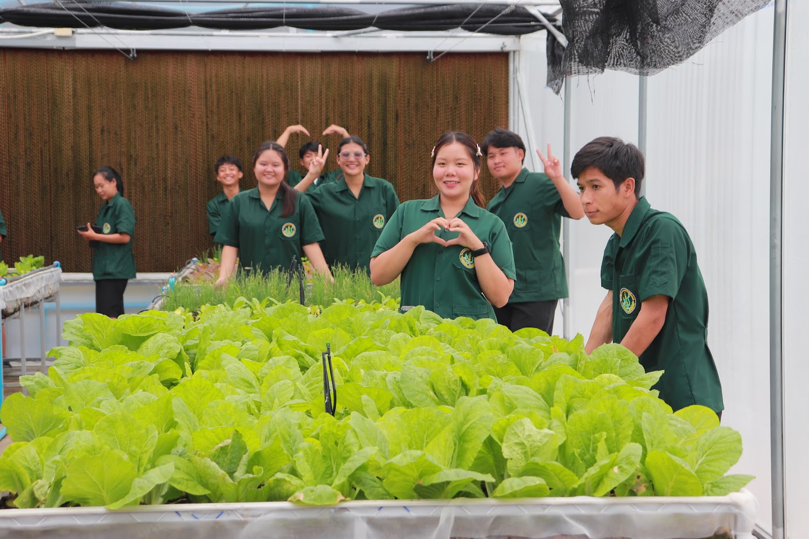

ADB FLAGSHIP ENTERPRISE PITCH
"การผลิตพืชพรรณมูลค่าสูงด้วยนวัตกรรมดิจิทัลเพื่อความยั่งยืน"
ศูนย์เรียนรู้โรงเรือนอัจฉริยะและการทำฟาร์มเชิงธุรกิจ
เพื่อการผลิตและแปรรูปไม้ดอกมูลค่าสูงครบวงจร
วิทยาลัยเกษตรและเทคโนโลยีเชียงใหม่
อัตรากำไรขั้นต้นโดดเด่นกว่าอุตสาหกรรม
คืนทุนไว ภายใน 28 เดือน
REINVESTMENT POLICY
จัดสรรกำไร 50% ลงทุนซ้ำ ในเทคโนโลยีและนวัตกรรมเพื่อรักษาขีดความสามารถระยะยาว
Core Business Model
ประมาณการการเติบโตของกำไรสุทธิภายใน 5 ปี (หน่วย: พันบาท)
การบูรณาการ 5 สาขาวิชาเพื่อสมรรถนะแห่งอนาคต
จัดการพืชและสภาวะโรงเรือนแม่นยำ
นวัตกรรมแปรรูปและมาตรฐาน GMP
การคิดเชิงออกแบบและการจัดการธุรกิจ
วิศวกรรมชลประทานและระบบอัตโนมัติ
บูรณาการทั้ง 4 สาขา ด้วยการจัดการข้อมูลขนาดใหญ่ (Big Data) และระบบควบคุม AI/IoT ในฟาร์ม
Experiential Learning
• ปวช.: โครงงานเป็นฐาน (PjBL) สร้างสรรค์ผลผลิตจริง
• ปวส.: การวิจัยเป็นฐาน (RBL) ยกระดับสู่นวัตกรรมธุรกิจ
From Theory to Commercial
เปลี่ยนการเรียนในตำรา สู่การตัดสินใจในสถานการณ์ธุรกิจจริงที่ตอบสนองความต้องการของคู่ค้าอุตสาหกรรม
แหล่งฝึกประสบการณ์สมรรถนะวิชาชีพตลอดห่วงโซ่คุณค่า
ฝึกเพาะเลี้ยงเนื้อเยื่อพืชในห้องปฏิบัติการ (Clean Zone) เพื่อผลิตต้นพันธุ์ปลอดโรคมาตรฐานสากล
ควบคุม IoT ในโรงเรือนอัจฉริยะ และฝึกสมรรถนะในระบบ Aquaponics เพื่อสมดุลธรรมชาติ
จัดการหลังการเก็บเกี่ยว คัดบรรจุมาตรฐาน GMP และการตลาดดิจิทัลบนสมาร์ทโฟน
Structured Learning Ecosystem: วิทยาลัยบูรณาการโครงการให้เป็นพื้นที่ "Learning by Doing" ครบทั้งห่วงโซ่มูลค่า
บูรณาการเครือข่ายเพื่อสร้างคุณค่าร่วมกัน (Shared Value)

Smart Floral Platform: ศูนย์กลางห่วงโซ่คุณค่า ที่เปลี่ยน "ความรู้" เป็น "รายได้" แก่อุตสาหกรรมและชุมชน
ความยั่งยืนเชิงนิเวศและการปรับตัวต่อความท้าทายในอนาคต
ระบบโรงเรือนอัจฉริยะควบคุมอุณหภูมิและสภาพแวดล้อมได้เบ็ดเสร็จ ทลายข้อจำกัดทางภูมิอากาศเพื่อให้สามารถ ผลิตสินค้านอกฤดูกาล (Off-season) ได้ตลอดปี
ติดตั้ง Solar Rooftop เพื่อผลิตพลังงานสะอาด ทดแทนการใช้ไฟฟ้าช่วงกลางวันได้ร้อยละ 70-80
ระบบบำบัดและหมุนเวียนน้ำในระบบปิด (Closed-loop) เพื่อประสิทธิภาพสูงสุดในการใช้ทรัพยากร
เปลี่ยนนิยามอาชีพเกษตรกรรมสู่เส้นทางอาชีพยุคดิจิทัล

ยกระดับเกษตรกรสู่ นักจัดการเทคโนโลยี (Technology Manager) ที่ทำงานในสภาพแวดล้อมที่สะอาด ปลอดภัย และใช้สมองเป็นหลักในการตัดสินใจผ่านข้อมูล
Premium Income: รายได้ที่สูงขึ้นอย่างมีนัยสำคัญจากผลิตภัณฑ์พืชพรรณเกรดพรีเมียมและดอกไม้กินได้
Global Master Skills: ทักษะการจัดการระบบอัตโนมัติที่สามารถประยุกต์ใช้เพื่อปลูกพืชเศรษฐกิจชนิดใหม่ได้ทุกประเภททั่วโลก
การตัดสินใจบนฐานข้อมูลและเทคโนโลยีอัจฉริยะ
ขับเคลื่อนการจัดการฟาร์มด้วยระบบ Decision Support System โดยรวบรวมข้อมูลเรียลไทม์จากเครือข่ายเซนเซอร์ IoT ทั่วทั้งโรงเรือน
AI Diagnostics: ประยุกต์ใช้ปัญญาประดิษฐ์ในการพยากรณ์โรคพืชและวิเคราะห์สุขภาพพืชเชิงรุก (IPM)
ทุกผลิตภัณฑ์มี QR Code เฉพาะ Batch เพื่อให้ลูกค้าตรวจสอบแหล่งผลิต มาตรฐานความปลอดภัย และประวัติการดูแลย้อนกลับได้สมบูรณ์
Data Optimization Results
ลดความสูญเสียผลผลิต (Waste) ลง 20-30%
เพิ่มความแม่นยำในการเก็บเกี่ยว 95%
THE SELF-SUSTAINING EDUCATION-BUSINESS MODEL
"ศูนย์เรียนรู้โรงเรือนอัจฉริยะและการทำฟาร์มเชิงธุรกิจ"
เพื่อการผลิตและแปรรูปไม้ดอกมูลค่าสูงครบวงจร สร้างผลกำไรที่มั่นคงควบคู่ไปกับการพัฒนาบุคลากรสมรรถนะสูง
วิทยาลัยเกษตรและเทคโนโลยีเชียงใหม่
Smart Premium & Sustainable Enterprise